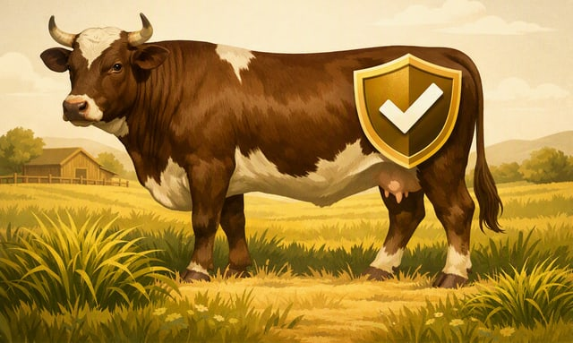

Boletim do ProdutorEdição de 10 de setembro de 2026
Preço da arroba na sua região, o que a Embrapa publicou, e uma dica prática da Ariel. Direto ao ponto — sem enrolação, do jeito que o produtor decide.
Setembro é começo de entressafra — a oferta de boi terminado a pasto cai, e é isso que está segurando o preço firme mesmo com o abate morno.
Os modelos do INPE e do INMET apontam El Niño de intensidade forte a excepcional, com pico entre outubro e dezembro de 2026 e efeitos se estendendo até maio de 2027. No leste do Pará — onde fica Canaã dos Carajás — a expectativa é de menos chuva e temperatura acima da média nesse período. Meteorologistas alertam, porém, que a severidade final ainda é incerta: vale acompanhar as atualizações do INMET em vez de decidir hoje o suplemento do ano todo.
Pesquisador da Embrapa Cerrados aponta que 80% das cultivares de forrageira usadas no Brasil são tecnologia antiga — muitas das décadas de 1970 e 1990 — porque o produtor prioriza preço na hora de escolher a semente, mesmo o capim sendo só 10% do custo de implantar o pasto. A Embrapa já tem cultivares mais modernas, em parceria com a Unipasto, pensadas pra pastagem que aguenta seca, praga e queda de qualidade na entressafra — o mesmo cenário que pesa na conta do suplemento.

Curso EAD da Embrapa Pecuária Sul sobre prevenção e controle de carrapato em bovinos: inscrição até 13/09, R$ 80, 30 horas, três módulos — biologia do parasita, controle químico e montagem do plano de manejo da fazenda. É pensado pro Sul do Brasil, mas os fundamentos de resistência a carrapaticida e ciclo do parasita valem pra qualquer região, inclusive aqui no Pará.
Com a oferta de boi caindo e o preço subindo, quem já ajustou o suplemento pra fase de seca sai na frente. Se o pasto está fibroso e o boi está devagar no cocho, é sinal de trocar de mineral pra proteico antes que o atraso vire arroba perdida.
Use a calculadora do site pra ver o número exato do seu lote — quanto custa, em suplemento, cada arroba que falta.
Abrir a calculadora